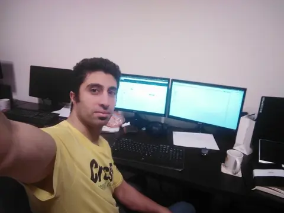
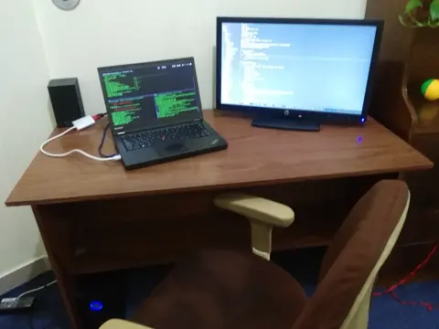
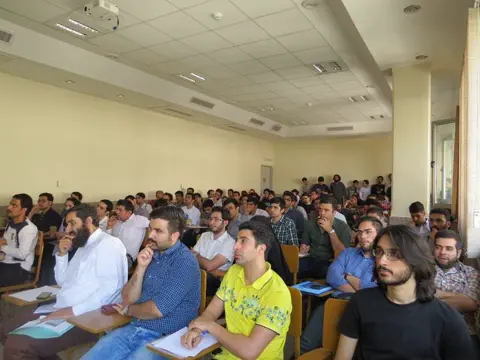

It started during my IT bachelor's — I picked up C# as my first language, then a mentor pushed me toward Linux and free software. By 2011 I'd joined the FSF and was contributing to GPL3 projects — Emacs plugins, utilities, patches to major packages. That shaped everything: build it open, build it right, give it back.
Web development pulled me in next — PHP, JavaScript, then Python 3 and Django. When I got into a master's program in AI, Python was already second nature. Scikit-learn, algorithm design, the works. I passed every course but never delivered the final project — I was too busy building real products to care about the degree.
My first professional role was at Cvas — a Shopify-like e-commerce platform built with Flask, MongoDB, and vanilla HTML/CSS. Nothing fancy, but real users and real problems. That's where the student ended and the engineer began.


